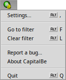
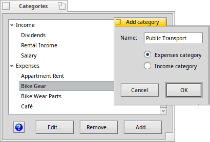
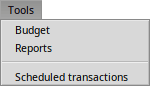
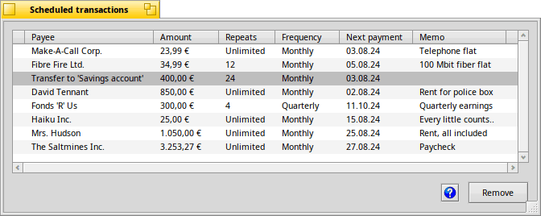

| Index |
|
The app menu ┗━ Categories ┗━ Settings The file menu The account menu The transaction menu ┗━ Schedule a transaction The tools menu ┗━ Scheduled transactions |
CapitalBe's Menus
To learn about all aspects of CapitalBe, let's quickly go through all menu items, only giving a more detailed description to the ones that need explanation. Bigger topics will link to their own separate page.
The application (icon) menu
The menu sporting the CapitalBe icon has all the items concerning the app in general.
of course closes the application and shows information about the developers etc.
opens the webbrowser with CapitalBe's project page where you can file issues about problems you encounter or ask for new features.
The first two items, and deserve a bit of further explanation.
 Categories…
Categories…
Every time you enter a new category when doing a transaction, it is saved and gets suggested as auto-complete when typing the next time. The window allows you to manage your categories.

Categories are sorted into two types: and .
You can select an item and its name, or it completely. In the later case, a new window opens where you have to choose another category for all the transactions that were filed under the one you're about to remove.
You can also a new category, give it a unique name and choose if it's an or .
Settings…
CapitalBe's settings only have one item at the moment: the .
All other colors are provided by the system and should work perfectly together, because they are also customized by the user to keep working together. The color for negative numbers, however, has to work on different backgrounds which could be any color.
When the default red color doesn't work for you, use the color picker at the top and make sure the new color works well on the different backgrounds shown in the preview at the bottom.
The file menu
To share data with other financial software, you can an . Note that only the current account will be exported as QIF, so to export all your accounts you'll have to invoke the export on each one.
The account menu
With you can synchronize the records of your accounts to the actual bank statements. As this deserves somemore explanation, please refer to the page Reconcile.
You can create a account (see QuickStart), and the currently selected account.
You can (and ) an account, which keeps all the data, but won't allow further transactions or transfers.
The allow changing name and currency configuration, just like when the account was created.
and let you change between your account. Handy especially with the provided shortcuts ALT SHIFT ↑/↓.
The transaction menu
You can the currently selected transaction, same as a double-click.
to move money between accounts, see QuickStart for more details.
removes the currently selected transaction.
and let you move up and down the transaction list. Handy especially with the provided shortcuts ALT ↑/↓.
Schedule this transaction…
After entering a transaction, you can decide to schedule it. That is create identical transactions (or transfers between accounts) in regular intervalls.
The data of the transaction – payee, amount, category and memo text – aren't editable, because all the scheduled transactions will be identical.
sets the intervall: , or .
Then you choose a and decide if the transaction will be scheduled of just a certin number of times.
Note, this feature only creates normal transactions at the set interval. After it was created, you can edit or delete a transaction like any other.
The tools menu

There are separate pages describing the first two items: Budget and Reports.
Scheduled transactions
This window shows all currently active scheduled transactions:

The list shows all relevant information, similar to what was provided when the scheduled transaction was created, plus the date of the next scheduled payment.
While you cannot edit a scheduled transaction, you can it.
Previous: QuickStart Next: Budget